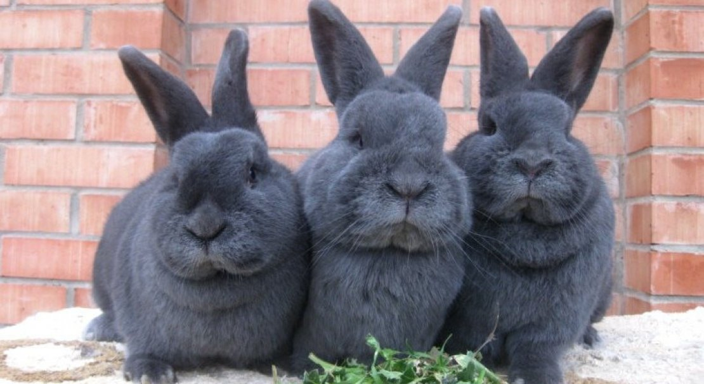
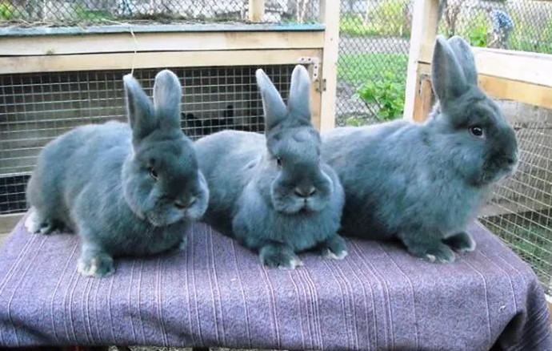
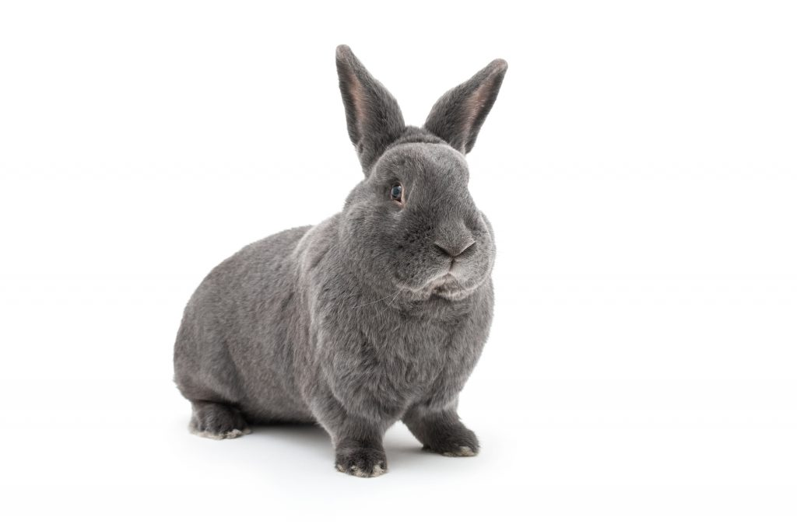
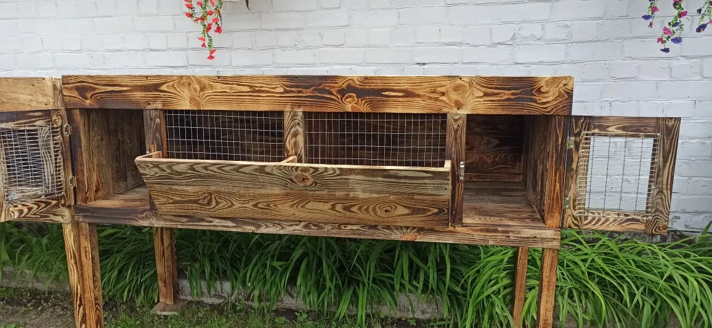
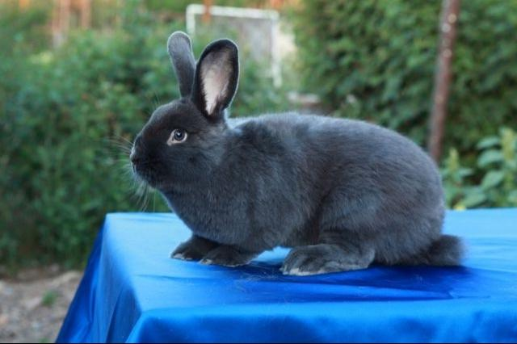
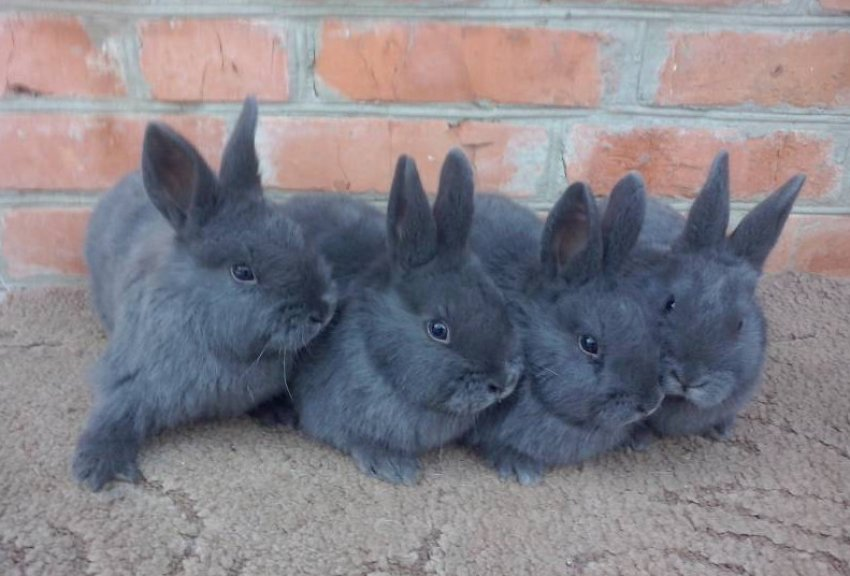
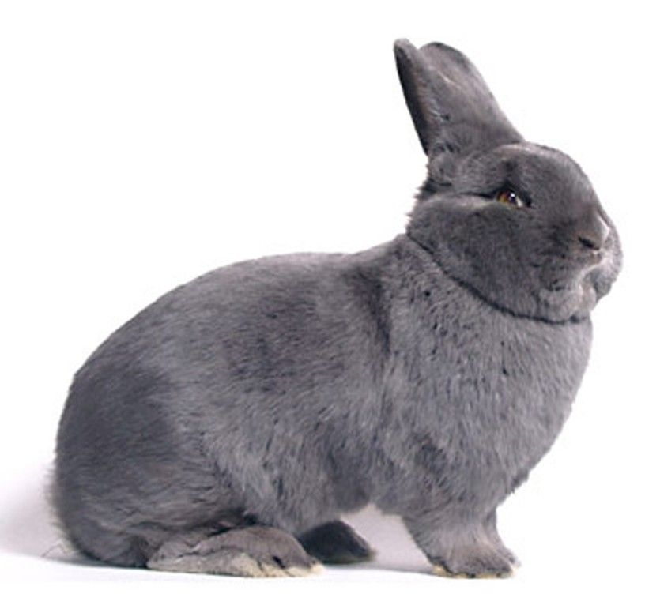
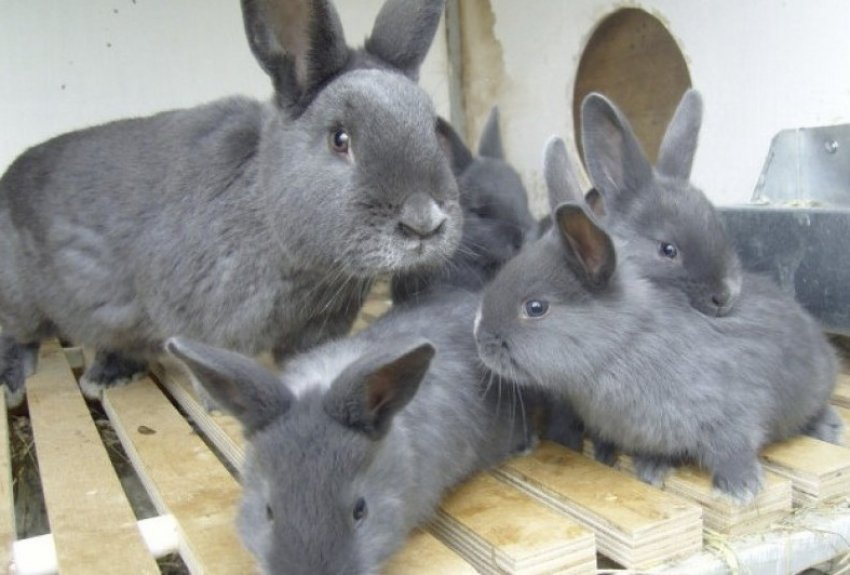
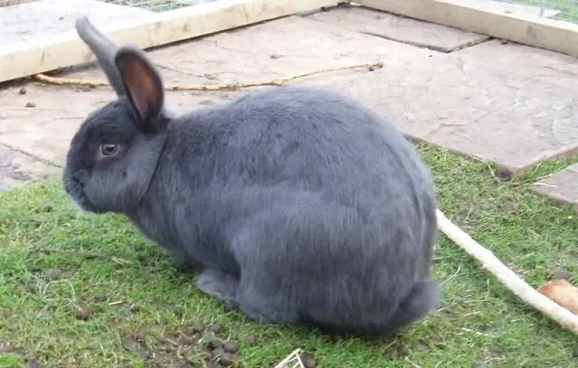

Австрійська гордість · З 1895 року
М'ясо-шкуркова порода з шовковистим сизим хутром і відмінними
м'ясними характеристиками — ідеальна для господарства будь-якого масштабу

Порода виведена в Австрії наприкінці XIX століття. У Відні діяв перший у Центральній Європі союз кролівників. Його керівник Шульц разом з однодумцями поставив перед собою амбітне завдання: отримати тварину, яка поєднувала б у собі велику вагу, відмінне м'ясо і неповторно красиву шкурку.
За основу взяли великого Бельгійського велетня (фландра) і схрестили його з місцевими блакитними моравськими кроликами. З потомства відбирались виключно особини блакитного забарвлення — доти, доки цей колір остаточно не закріпився в генотипі.
У 1895 році нова порода була офіційно представлена світу. Тварини вийшли трохи менші за фландрів, проте їх шкурка виглядала набагато розкішніше. Порода швидко здобула визнання і поширилась по всій Європі.
До України Віденський блакитний потрапив у 1960-х роках і відразу завоював прихильність фермерів за відмінну адаптивність до різних кліматичних умов.

«Шовкове сизо-блакитне хутро — справжня візитна картка породи»

Щільний, компактний, злегка подовжений. Довжина до 57 см. Розвинена мускулатура, міцний кістяк. Форма — скоріше циліндрична, ніж кругла.
Голова невелика, пропорційна. Вуха середнього розміру, прямостоячі, добре опушені. Вираз мордочки спокійний і дружелюбний.
Тип «роллбек» — при погладжуванні проти шерсті повертається у початкове положення. Колір — насичений димчасто-блакитний, близький до відтінку синього сланцю. Рівномірний, без зональності.
М'яке, густе, шовковисте, з добре розвиненим підшерстям. Жодних сірих або чорних волосків — лише чисте однотонне забарвлення.
Очі темно-карі або синьо-сірі, виразні. Ніс, ратиці і кігті відповідають загальному тону — від попелясто-синього до сизо-блакитного.
М'ясо відрізняється низьким вмістом жиру, відмінним смаком і легко засвоюється. Рекомендоване для дитячого та дієтичного харчування.
Шкурки Віденського блакитного цінуються у хутровій промисловості завдяки унікальному кольору та якості волосяного покриву.
Самиці вирізняються спокійним темпераментом та доброю материнською поведінкою — практично завжди годують і доглядають все потомство.
| Вік | 1 місяць | 2 місяці | 3 місяці | 4 місяці | 5 місяців | 6 місяців | Дорослий |
|---|---|---|---|---|---|---|---|
| Вага (кг) | 0,5 | 1,2 | 2,0–2,5 | 2,8–3,2 | 3,2–3,8 | 3,8–4,3 | 4–5 (до 7) |
Порода невибаглива, але правильний догляд — запорука здоров'я та продуктивності

Мінімальний розмір клітки для однієї дорослої особини — 70×50×40 см (Д×Ш×В). Для самиці з приплодом — не менше 90×60×45 см. Підлога — сітчаста або дерев'яна з підстилкою. Обов'язкові ясла для сіна, годівниця та напувалка.
Оптимальна температура: +15…+20°C. Кролики добре переносять мороз (до -15°C), але не терплять протягів і підвищеної вологості. Приміщення повинно провітрюватись, але без прямих протягів. Вологість — до 70%.
Порода активна і допитлива. Виграє від можливості вільного вигулу у захищеному вольєрі хоча б кілька годин на день. Це позитивно впливає на стан м'язів і загальне здоров'я тварини.
Кролики самостійно доглядають за шерстю. Людині необхідно:
Самиці готові до першого спарювання у 4–5 місяців, самці — у 5–6 місяців. Рекомендується не поспішати: перший окіл у 5–6 місяців дає здоровіше потомство.
Самицю підсаджують до самця (не навпаки!). Спарювання займає 5–15 хвилин. Для надійного запліднення рекомендується повторна в'язка через 12 годин. Ознаки охоти у самиці: неспокій, почервоніння петлі.
Тривалість сукрольності — 28–32 дні (у середньому 30 днів). На 12–14-й день вагітність можна підтвердити пальпацією. За 3–5 днів до окролу самиця починає готувати гніздо — вистеляє його пухом.
Середній приплід — 7–9 кроленят. Народжуються сліпими і голими. Очі відкриваються на 10–12-й день. Перший місяць — виключно молочне вигодовування. З 3–4 тижнів починають пробувати підгодовку.
Молодняк відлучають від самиці у 45–60 днів. Ранє відлучення (40 днів) практикується при планованому повторному спарюванні. Після відлучення кроленят утримують разом ще 2–3 тижні.
Основа — якісне сіно плюс збалансований добір зелені, овочів та концентратів
Основа раціону — 24 години на добу у вільному доступі. Лугове або тимофіївкове. Норма — до 200 г на добу.
Морква, буряк (кормовий), гарбуз, кабачок, топінамбур. Давати свіжими, без цвілі. Норма — 100–200 г на добу.
Кропива, конюшина, тимофіївка, пажитниця, гілки берези, верби, яблуні. Вводити поступово, щоб не викликати розлад шлунка.
Овес, ячмінь, кукурудза (подрібнені), спеціальний кролячий комбікорм. Норма — 30–50 г на кг живої ваги.
Заплісніле сіно, мокра трава зранку (роса), гнилі овочі — можуть спричинити смертельне здуття шлунка.
Пижмо, беладонна, болиголов, дурман, вовче лико, жовтець. Смертельно небезпечні для кроликів.
Викликає газоутворення і розлад травлення. Допускається лише листя в малих кількостях.
Сира картопля — отрута. Цибуля та часник подразнюють слизові та руйнують кров'яні тільця.
Здоба, солодощі, смажена їжа — не підходять для травної системи кроликів.
Важливо: Свіжа вода — завжди! Один дорослий кролик споживає до 300–500 мл води на добу. Взимку і восени слід збільшити частку концентрованих кормів. Розрахунок: 4 кормові одиниці на 1 кг живої ваги.
Порода відрізняється міцним імунітетом, але вакцинація та профілактика обов'язкові
Вірусна, гостра, 100% летальність без вакцинації. Вакцинація — обов'язкова, починаючи з 45 днів.
Вірусне захворювання, яке передається через кровосисних комах. Ознаки: набряки, гнійні виділення. Вакцинувати двічі на рік.
Бактеріальна хвороба дихальних шляхів. Поширюється у погано вентильованих приміщеннях. Лікування — антибіотики за призначенням ветеринара.
Кишковий паразит, особливо небезпечний для молодняку. Профілактика: чистота, сухість, антипаразитарні препарати.
Виникає від мокрої трави, неякісного корму. Симптоми: кролик не рухається, живіт твердий. Перша допомога — масаж, симетрикон.
Ознаки: кролик трясе головою, в вусі — темний струп. Лікування: крапелі або спрей проти кліщів.
45 днів — ВГХК (моновакцина або комплексна)
75 днів (або через 2–3 тижні після першої) — Міксоматоз або комплексна асоційована
Кожні 6–12 місяців залежно від препарату. Щеплення робити тільки здоровим тваринам натщесерце.
Раз на 3–4 місяці — антигельмінтики для кроликів.
Віденський блакитний — одна з найкращих порід для українського господарства. Поєднує в собі дохідність, красу та витривалість. Підходить як для великих ферм, так і для присадибних ділянок.




